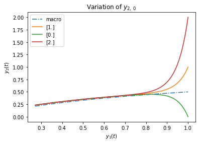

Macro Solution
######################################
# Run First Cell for Initialization #
# #
# SHIFT + ENTER #
######################################
# Initialize notebook
%run -i ./code/01_michaelismenten/initialize
# Load functions in external python scripts
%load_ext autoreload
%autoreload 1
%aimport refresh
%aimport ode
display(Javascript("Jupyter.notebook.execute_cells([2,3,6,9,7])"))
---------------------------------------------------------------------------
ModuleNotFoundError Traceback (most recent call last)
File ~/work/lec_multiscale/lec_multiscale/code/01_michaelismenten/initialize.py:2
1 # Import required modules
----> 2 import numpy as np # numerics
3 import matplotlib.pyplot as plt # plot environment
4 from scipy.integrate import odeint # numerical ODE solver
ModuleNotFoundError: No module named 'numpy'
---------------------------------------------------------------------------
ModuleNotFoundError Traceback (most recent call last)
Cell In[1], line 12
10 get_ipython().run_line_magic('load_ext', 'autoreload')
11 get_ipython().run_line_magic('autoreload', '1')
---> 12 get_ipython().run_line_magic('aimport', 'refresh')
13 get_ipython().run_line_magic('aimport', 'ode')
15 display(Javascript("Jupyter.notebook.execute_cells([2,3,6,9,7])"))
File /opt/hostedtoolcache/Python/3.10.9/x64/lib/python3.10/site-packages/IPython/core/interactiveshell.py:2364, in InteractiveShell.run_line_magic(self, magic_name, line, _stack_depth)
2362 kwargs['local_ns'] = self.get_local_scope(stack_depth)
2363 with self.builtin_trap:
-> 2364 result = fn(*args, **kwargs)
2365 return result
File /opt/hostedtoolcache/Python/3.10.9/x64/lib/python3.10/site-packages/IPython/extensions/autoreload.py:603, in AutoreloadMagics.aimport(self, parameter_s, stream)
601 else:
602 for _module in [_.strip() for _ in modname.split(",")]:
--> 603 top_module, top_name = self._reloader.aimport_module(_module)
605 # Inject module to user namespace
606 self.shell.push({top_name: top_module})
File /opt/hostedtoolcache/Python/3.10.9/x64/lib/python3.10/site-packages/IPython/extensions/autoreload.py:191, in ModuleReloader.aimport_module(self, module_name)
179 """Import a module, and mark it reloadable
180
181 Returns
(...)
187
188 """
189 self.mark_module_reloadable(module_name)
--> 191 import_module(module_name)
192 top_name = module_name.split(".")[0]
193 top_module = sys.modules[top_name]
File /opt/hostedtoolcache/Python/3.10.9/x64/lib/python3.10/importlib/__init__.py:126, in import_module(name, package)
124 break
125 level += 1
--> 126 return _bootstrap._gcd_import(name[level:], package, level)
File <frozen importlib._bootstrap>:1050, in _gcd_import(name, package, level)
File <frozen importlib._bootstrap>:1027, in _find_and_load(name, import_)
File <frozen importlib._bootstrap>:1004, in _find_and_load_unlocked(name, import_)
ModuleNotFoundError: No module named 'refresh'
Nonlinear ODE model:
(1)#\[\begin{equation}
\frac{d}{dt}
\begin{bmatrix}
y_1 \\
y_2
\end{bmatrix}=
\begin{bmatrix}
-y_1+\left(y_1+\kappa-\lambda\right)y_2 \\
\frac{1}{\varepsilon}\left(y_1-\left(y_1+\kappa\right)y_2\right)
\end{bmatrix}
\end{equation}\]
Macro model solution:
(2)#\[\begin{equation}
y_2=\frac{y_1}{y_1+\kappa}
\end{equation}\]
%run -i ./code/01_michaelismenten/input_param
%run -i ./code/01_michaelismenten/output_y1_y2
y_1_0: 1.00, y_2_0: 1.00
kappa: 1.00, lambda: 2.00
epsilon: 0.10
Macro Solution#
After an initial transient behavior, the system behaves independent of the initial condition \(y_2(0)\) and can be approximated by the macroscopic model
(3)#\[\begin{equation}
y_2=\frac{y_1}{y_1+\kappa}
\end{equation}\]
%run -i ./code/01_michaelismenten/input_y2_0
%run -i ./code/01_michaelismenten/output_y2_0

Add=True
Add=False